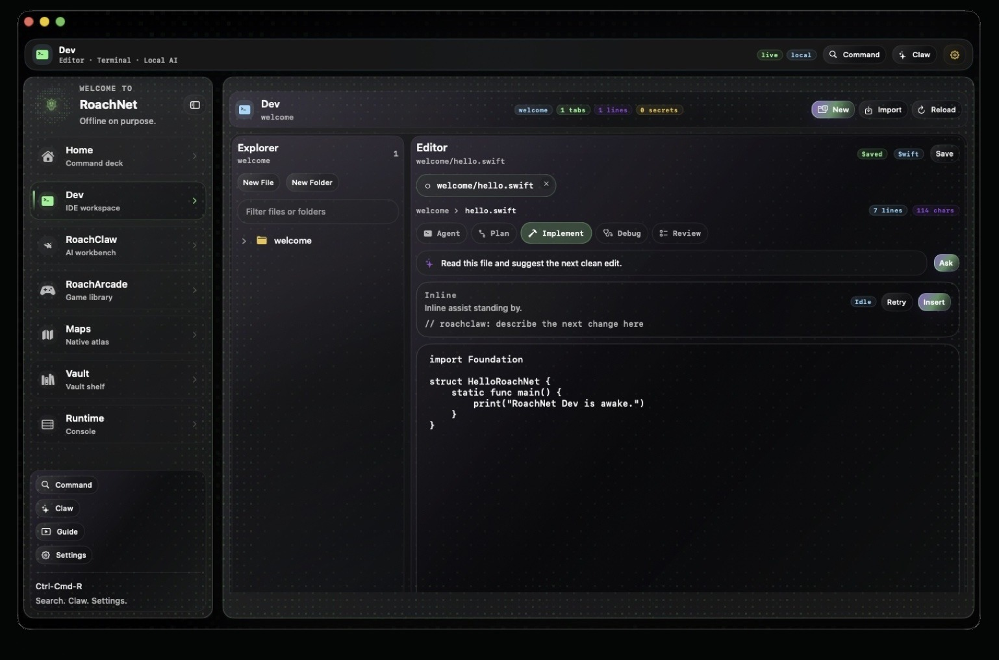
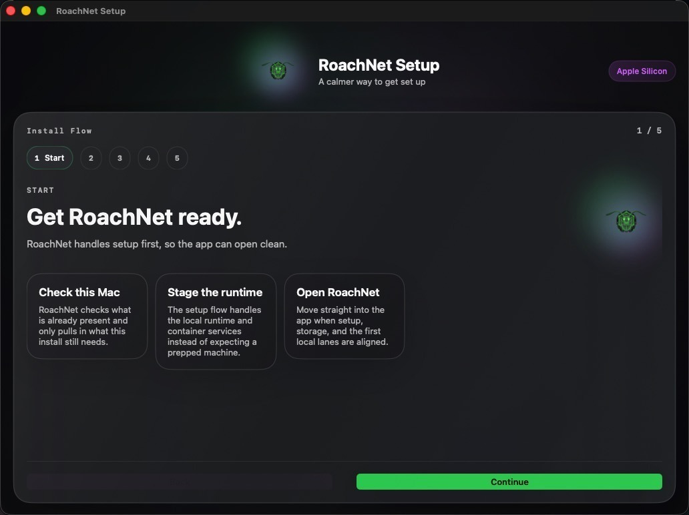

Your prompts hit a local lane by default.
RoachClaw feels like part of the machine, not another tab.
RoachNet
Maps, models, dev tools, and your own notes land in one contained workspace instead of a pile of tabs.
Built for Apple Silicon, Windows 11, and Linux desktops.
Local time and storage are estimated in-browser until the native app is installed.
Why RoachNet
RoachClaw feels like part of the machine, not another tab.
RoachNet keeps the app, data, tools, and models together so it is easy to move, back up, or wipe.
Then it shows you Home, Dev, or RoachClaw with the least possible friction.
Native surfaces
Command bar, launch tiles, and key metrics in one first pane. Press ⇧⌘R to surface it over the desktop.

Projects live in the RoachNet vault with a built-in shell, inline code suggestions, and RoachClaw close by.

Contained models via Ollama and OpenClaw, a recommended default model, and a clear path for upgrades.
Routes, checklists, lyrics, patch notes, and late-night ideas in one place instead of scattered folders.

The setup app checks the machine, stages the runtime, and hands you straight into the real shell.
Where RoachNet fits
What’s inside RoachNet
Maps, course packs, model lanes, field guides, and tools all install as RoachNet apps instead of loose downloads.
What RoachNet runs for you
Download
Support